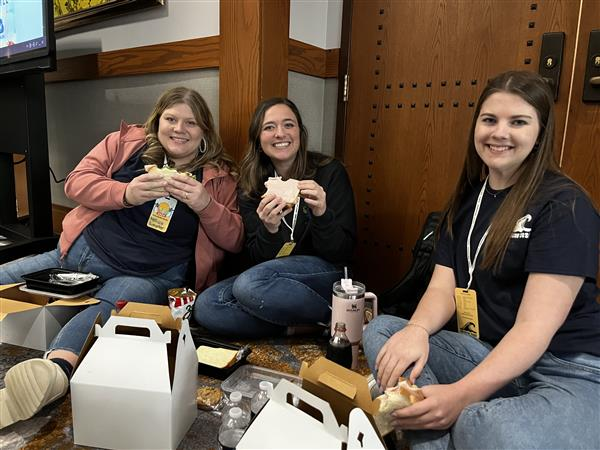

History
TechCon® North America Training and Expo has a trusted history of providing industry experts to lead discussions on the technical development and solutions which improve key high voltage maintenance programs and asset management strategies for the aging electrical grid infrastructure. Since 1996, TechCon North America has been produced by TJ|H2b Analytical Services, a senior leader in the oil analysis industry TechCon® 2024 is hosted by Pacific Gas and Electric PG&E
Origins and Evolution
By 2015, TechCon had grown significantly, attracting attendees from across the United States. This growth was driven by an expanding agenda that included sessions on artificial intelligence, cybersecurity, and the Internet of Things. TechCon's reputation for featuring cutting-edge topics and thought leaders in the tech industry helped solidify its place as a must-attend event.
Over the next few years, TechCon continued to evolve. The conference expanded its reach internationally, drawing participants from around the globe. In response to increasing demand, TechCon introduced new formats such as interactive workshops, hackathons, and panel discussions, further enriching the attendee experience.
Today, TechCon is recognized as one of the premier technology conferences in the world. It brings together thousands of professionals, from startups to established enterprises, offering unparalleled networking opportunities and access to the latest technological innovations. The event now spans multiple days and features hundreds of sessions, with speakers ranging from industry pioneers to visionary entrepreneurs.
As TechCon looks to the future, it remains committed to its founding principles of innovation, collaboration, and education. The conference continues to adapt to the ever-changing tech landscape, ensuring that it remains a vital platform for learning and growth in the technology community.